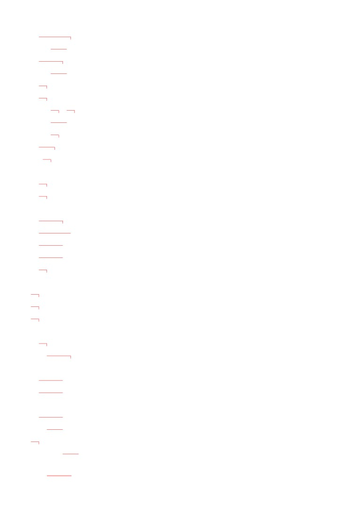
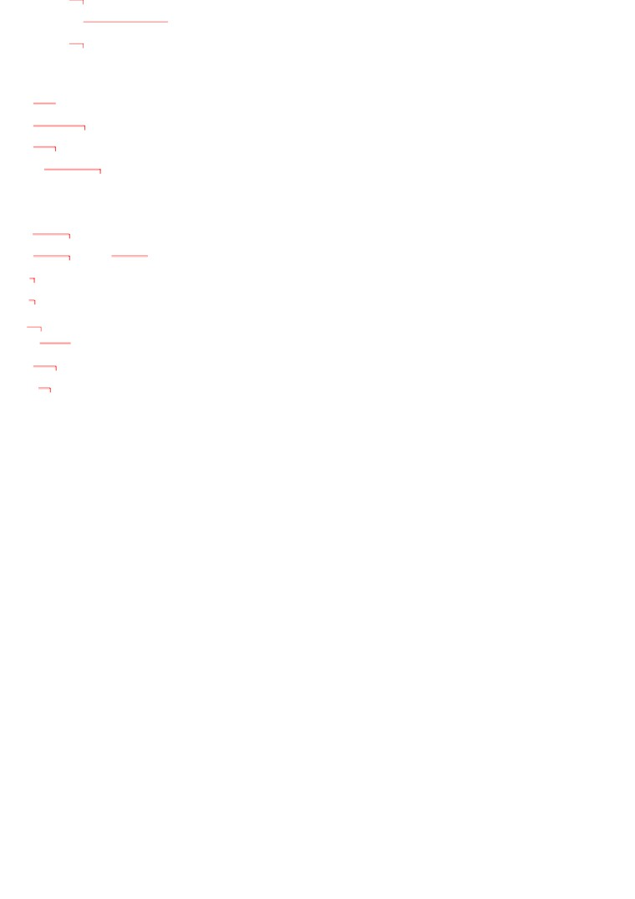
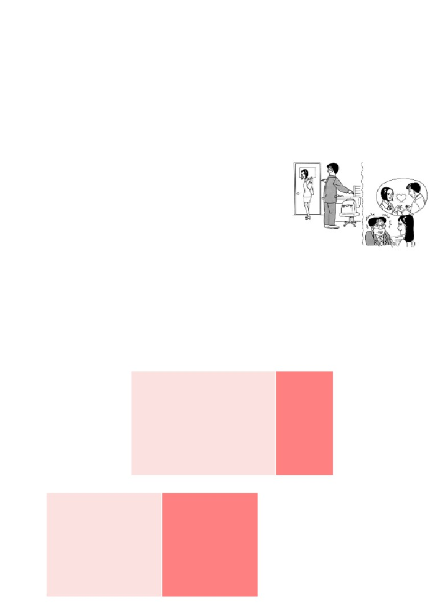
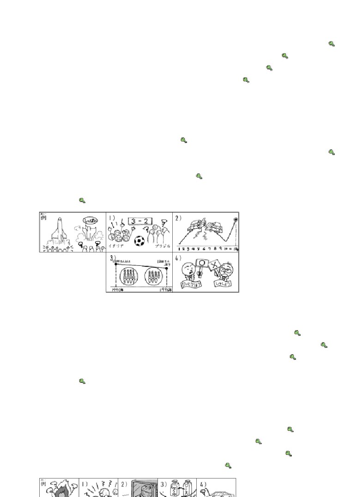
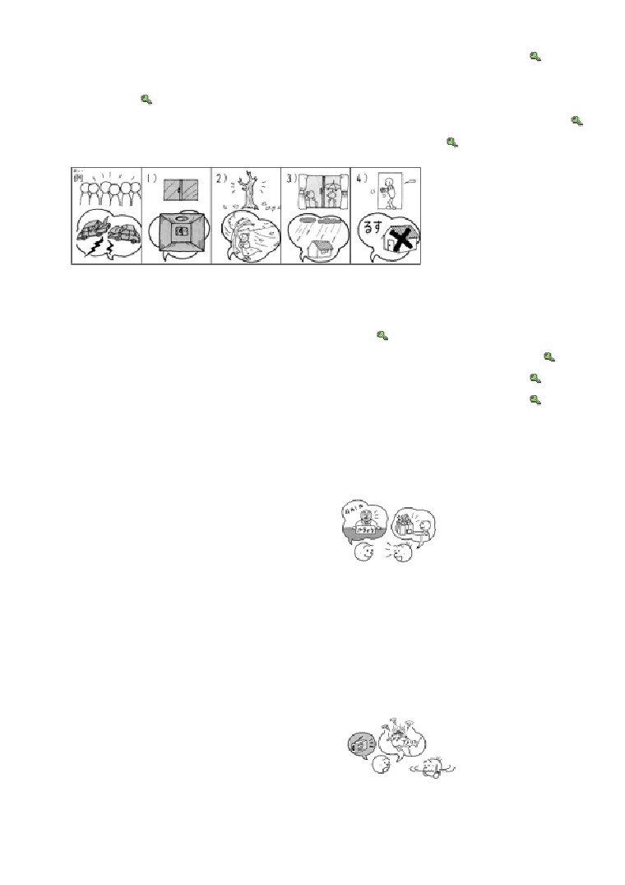
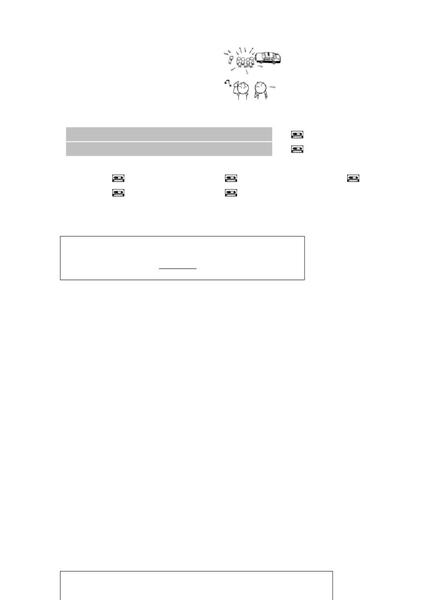
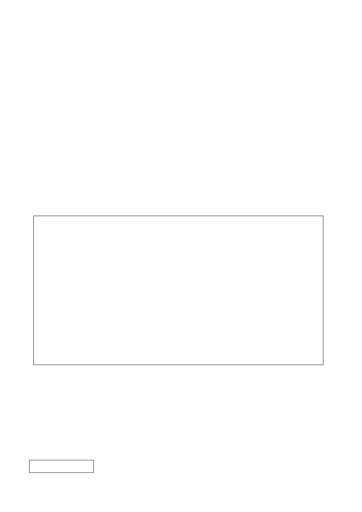
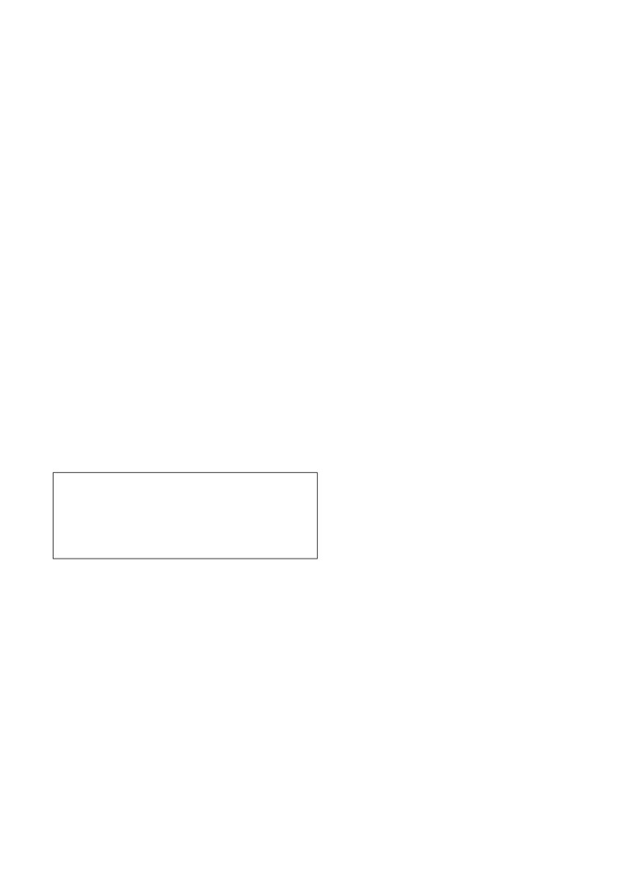

第４７課
課:47 (頁:1/9)
ことば
1.
あつまります
Ⅰ
集まります
〔人〕集合
［ひとが～］
［人が～］
2.
わかれます
Ⅱ
別れます
分離，分手，〔與人〕分手
［ひとが～］
［人が～］
3. ながいきします Ⅲ
長生きします
長壽
4. します Ⅲ
［おと／こえが～］
［音／声が～］
有〔響動/聲音〕
［あじが～］
［味が～］
有〔味道〕
［においが～］
有〔氣味〕
5. さします Ⅰ
撐開
［かさを～］
［傘を～］
撐 傘〕
6. ひどい
嚴厲，嚴重，厲害
7. こわい
怖い
可怕
8. てんきよほう
天気予報
天氣預報
9. はっぴょう
発表
發表
10. じっけん
実験
實驗
11. じんこう
人口
人口
12. におい
氣味
13. かがく
科学
科學
14. いがく
医学
醫學
15. ぶんがく
文学
文學
16. パトカー
警車
17. きゅうきゅうしゃ
救急車
救護車
18. さんせい
賛成
贊成
19. はんたい
反対
反對
20. だんせい
男性
男性，男士
21. じょせい
女性
女性，女士
22. どうも
總學得（用於不十分肯定的判斷）
23. ～に よると
根據～（表示情報來源）
とう
24.
※バリ［島］
巴里島（印尼）

課:47 (頁:2/9)
25.
※イラン
伊朗
26. ※カリフォルニア
加州（美國）
27. ※グアム
關島
かい わ
会話
こい びと
恋人
戀人，男女朋友
こん やく
婚約します Ⅲ
訂婚
あい て
相手
對方，對手
し
あ
知り合います Ⅰ
相識
よ
もの
…読み物…………………………………………………………………………
へい きん じゅ みょう
平均寿命
平均壽命
くら
だん せい
比べます ［男性と～］ Ⅱ
比較，〔和男性相比〕
はか せ
博士
博士
のう
脳
腦
ホルモン
荷爾蒙
け しょう ひん
化粧品
化妝品
しら
調べ
調查
け しょう
化粧
化妝（～を します：化妝）
………………………………………………………………………………………
ぶん けい
文型
てん き よ ほう
さむ
1.
天気予報に よると、あしたは 寒く なるそうです。
となり
へ や
2.
隣の 部屋に だれか いるようです。
れい ぶん
例文
しん ぶん
よ
がつ
に ほん ご
たい かい
1.
新聞で 読んだんですが、1月に 日本語の スピーチ大会が
で
あるそうですよ。 ミラーさんも 出て みませんか。
かんが
…そうですね。 考えて みます。
こ
す
2.
クララさんは 子どもの とき、フランスに 住んで いたそうです。
ご
…それで フランス語も わかるんですね。
でん き
あたら
でん し じ しょ
つか
3.
パワー電気の 新しい 電子辞書は とても 使いやすくて、
いいそうですよ。
か
…ええ。 わたしは もう 買いました。
あいだ
とう
あそ
い
き
4.
この間 インドネシアの バリ島へ 遊びに 行って 来ました。
ところ
…とても きれいな 所だそうですね。
ええ。 ほんとうに よかったです。

こえ
課:47 (頁:3/9)
にぎやかな 声が しますね。
5.
…ええ。 パーティーでも して いるようですね。
ひと
おお ぜい
あつ
6. 人が 大勢 集まって いますね。
じ こ
きゅうきゅうしゃ
き
…事故のようですね。パトカーと 救急車が 来て いますよ。
かい わ
会話
こん やく
婚約したそうです
わた なべ
さき
しつ れい
渡辺：
お先に 失礼します。
たか はし
わた なべ
ま
ぼく
かえ
高橋：
あっ、渡辺さん、ちょっと 待って。 僕も 帰りますから……。
わた なべ
いそ
渡辺：
すみません、ちょっと 急ぎますから。
--------------------------------
たか はし
わた なべ
はや
かえ
高橋：
渡辺さん、このごろ 早く 帰りますね。
こい びと
どうも 恋人が できたようですね。
はやし
し
あいだ こん やく
林 ：
あ、知らないんですか。 この間 婚約したそうですよ。
たか はし
あい て
高橋：
えっ、だれですか、相手は。
はやし
すず き
林 ：
IMCの 鈴木さんですよ。
たか はし
すず き
高橋：
えっ、鈴木さん？
はやし
きょ ねん
わた なべ
とも だち
けっ こん しき
し
あ
林 ：
去年 渡辺さんの 友達の 結婚式で 知り合ったそうですよ。
たか はし
高橋：
そうですか。
はやし
たか はし
林 ：
ところで、高橋さんは？
たか はし
ぼく
ぼく
し ごと
こい びと
高橋：
僕ですか。 僕は 仕事が 恋人です。
れん しゅう
練習 Ａ
しん ぶん
あめ
1. 新聞に よると、
あしたは 雨が
ふる
そうです。
たい ふう
台風は
こない
こう べ
じ しん
けさ 神戸で ひどい 地震が
あった
じ しん
ひと
地震で けがを した 人は
いなかった
なつ
ことしは 夏が
みじかい
さっ ぽろ
ゆき まつ
札幌の 雪祭りは
きれいだ
てん き
あしたの 天気は
くもりだ
2.
コンサートが
はじまる
ようです。
か ちょう
じ む しょ
課長は 事務所に
いない
ばん
あめ
きのうの 晩 雨が
ふった
し けん
タワポンさんは 試験に
ごうかくしなかった
そと
外は
さむい
ぶ ちょう
ぶん がく
部長は イギリス文学が
すきな
お がわ
はなし
小川さんの 話は
ほんとうの

れん しゅう
課:47 (頁:4/9)
練習 Ｂ
れい
てん き よ ほう
あつ
1. 例： 天気予報・あしたは 暑く なります
てん き よ ほう
あつ
→ 天気予報に よると、あしたは 暑く なるそうです。
しん ぶん
に ほん
じょ せい
せ かい
なが い
1)
きのうの 新聞・日本の 女性は 世界で いちばん 長生きします →
か がく ざっ し
あたら
ほし
はっ けん
2)
アメリカの 科学雑誌・新しい 星が 発見されました →
か ぞく
て がみ
さむ
3)
家族の 手紙・ニューヨークは とても 寒いです →
はなし
い がく
べんきょう
たい へん
4)
ワンさんの 話・医学の 勉強は 大変です →
れい
じっ けん
じ
2.
例： 実験は どうでしたか。（ 7時の ニョース ）
じ
しっ ぱい
→ 7時の ニュースに よると、失敗したそうです。
し あい
か
1)
サッカーの 試合は どちらが 勝ったんですか。
はなし
（ サントスさんの 話 ） →
こう つう じ こ
おお
なん がつ
けい さつ
はっ びょう
2)
交通事故が いちばん 多いのは 何月ですか。（ 警察の 発表 ） →
さい きん
とう きょう
じん こう
ふ
3)
最近 東京の 人口は 増えて いるんですか。
さい きん
（ いいえ、最近の データ ） →
しゅ しょう
だい とう りょう
い けん
さん せい
4)
首相は 大統領の 意見に 賛成ですか。（ いいえ、けさの ニュース ）
→
れい
お がわ
てん きん
おお さか
3.
例： 小川さんは どこに 転勤したんですか。（ 大阪 ）
おお さか
てん きん
→ 大阪に 転勤したそうです。
らい ねん
がつ
1)
あの ビルは いつ できるんですか。（ 来年の 3月 ） →
なに
べんきょう
に ほん ぶん がく
2)
タワポンさんは 何を 勉強して いるんですか。（ 日本文学 ） →
か じ
げん いん
なん
ひ
3)
火事の 原因は 何だったんですか。（ たばこの 火 ） →
ふたり
わか
かんが かた
ちが
4)
どうして あの 二人は 別れたんですか。（ 考え方が 違いました ）
→
れい
へん
なに
も
へん
4.
例： 変な におい （ 何か 燃えて います ） →
変な においが しますね。
なに
も
……ええ、何か 燃えて いるようです。
こ
こえ
こ
1)
子どもの 声 （ 子どもたちが けんかして います ） →
や
2)
いい におい （ ケーキを 焼いて います ） →
へん
あじ
3)
変な 味 （ しょうゆと ソースを まちがえました ） →
へん
おと
こ しょう
4)
変な 音 （ エンジンが 故障です ） →

れい
ひと
あつ
じ こ
課:47 (頁:5/9)
5.
例： 人が 集まって いますね。（ 事故です ）
じ こ
→ ええ。事故のようですね。
でん き
き
1)
電気が 消えて いますね。（ もう だれも いません ） →
き
は
お
つよ
かぜ
ふ
2)
木の 葉が たくさん 落ちて いますね。（ 強い 風が 吹きました ）
→
ひと
かさ
あめ
ふ
3)
あの 人、傘を さして いますね。（ 雨が 降って います ） →
か
る す
4)
かぎが 掛かって いますね。（ 留守です ） →
れい
き
み
き
6. 例： だれか 来ました・ちょっと 見て 来ます
き
み
き
→ だれか 来たようですから、ちょっと 見て 来ます。
にわ
ねこ
み
き
1)
庭に 猫が います・見て 来ます →
そと
さむ
き
い
2)
外は 寒いです・コートを 着て 行った ほうが いいです →
す
さそ
3)
ミラーさんは カラオケが 好きです・ぜひ 誘いましょう →
に もつ
わす
もの
こう ばん
も
い
4)
この 荷物は 忘れ物です・交番へ 持って 行きましょう →
れん しゅう
練習 Ｃ
お がわ
か ちょう
1. Ａ: 小川さんが 課長に なったそうですよ。
Ｂ: ほんとうですか。 いつですか。
がつついたち
Ａ:
4月1日だそうです。
いわ
Ｂ: じゃ、お祝いを しないと……。
お がわ
おく
1) 小川さんの 奥さんが
にゅういん
入院しました
み ま
い
お見舞いに 行きます
お がわ
かあ
さい
2) 小川さんの お母さんが 80歳に なります
なに
いわ
何か お祝いを あげます
き
けさの ラジオを 聞きましたか。
2. Ａ:
なに
Ｂ: いいえ。 何か あったんですか。
Ａ: ええ。
やま か じ
カリフォルニアで 山火事が
あったそうですよ。
こわ
Ｂ: ほんとうですか。 怖いですね。
しん ぶん
よ
1) 新聞を 読みます
ひ こう き
お
グアムで 飛行機が 落ちました
み
2)
テレビを 見ます
おお
じ しん
イランで 大きな 地震が ありました

課:47 (頁:6/9)
3. Ａ:
どう したんですか。
じ こ
Ｂ: どうも 事故が あったようです。
き
Ａ: そうですね。 パトカーが 来て いますね。
こ しょう
1) エンジンが 故障です
へん
おと
変な 音が します
みち
2)
道を まちがえました
けし き
ちが
いつもの 景色と 違います
もん だい
問題
れい
きゅうしゅう
じ しん
1.
1)
…例： 九州で地震があったそうです。
れい
す
2)
…例： タイのバンコクに住んでいるそうです。
2.
1)
( × )
2)
( 〇 )
3)
( × )
4)
( 〇 )
5)
( 〇 )
れい
はは
て がみ
いぬ
し
3. 例： 母の 手紙に よると、うちの 犬が （ 死んだ ） そうです。
おとこ
こ
かわいいです
にぎやかです
男の 子です
う
し
おく
生まれました
死にました
遅れます
ぎ おん まつり
み
1)
祇園祭を 見た ことが ありますか。
…いいえ、ありませんが、とても （ にぎやかだ ） そうですね。
た なか
でん わ
2)
さっき 田中さんから 電話が ありました。
でん しゃ
じ こ
ぷん
おく
電車の 事故で 30分ぐらい（ 遅れる ） そうです。
き むら
あか
う
3)
木村さんに 赤ちゃんが （ 生まれた ） そうです。
…それは よかったですね。どちらですか。
おとこ
こ
（ 男の子だ ） そうです。とても （ かわいい ） そうですよ。
れい
そと
ゆき
ふ
さむ
さむ
4. 例： 外は 雪が 降って いて、（ 寒いです→ 寒 ） そうです。
てん き よ ほう
さむ
さむ
天気予報に よると、あしたも （ 寒いです→ 寒い ）そうです。
み
あたら
そう じ き
1)
カタログで 見ると、新しい 掃除機は （ いいです
つか
ひと
はなし
→よさ ） そうですが、使った 人の 話に よると、あまり
べん り
べん り
（ 便利じゃ ありません→ 便利じゃない ）そうです。
しゃ しん
み
こわ
こわ
2)
シュミットさんは 写真で 見ると、（ 怖い→ 怖 ） そうですが、
はな
やさ
ひと
やさ
ひと
話して みると、とても （ 優しい 人です→ 優しい人だ ）そうです。
かれ
おお
いえ
しあわ
しあわ
3)
彼は 大きい 家が あって、（ 幸せです→ 幸せ ）そうですが、
じつ
し ごと
こま
こま
実は 仕事が うまく いかなくて、（ 困って います→ 困っている ）そうです
れい
こう さ てん
ひと
あつ
じ こ
5. 例： 交差点に 人が 集まって います。事故が （ あった ） ようです。
き
ふる
います あります 来ます 古いです カレーです

じ む しょ
でん き
き
課:47 (頁:7/9)
1)
事務所の 電気が 消えて います。だれも（ いない ） ようです。
げん かん
ひと
こえ
き
2)
玄関で 人の 声が しました。だれか （ 来た ） ようです。
ばん
3)
いい においが します。きょうの 晩ごはんは （ カレーの ） ようです。
ぎゅうにゅう
へん
あじ
ふる
4)
この 牛乳は ちょっと 変な 味が します。（ 古い ） ようです。
れい
ほし
は
は
6.
例： 星が きれいですね。あしたも （ ①晴れた、②晴れだ、
は
③晴れ ） そうですね。（③）
で
あたま
いた
1)
せきも 出るし、頭も 痛いし、どうも かぜを ひいた （ ①そうです、
②ようです、③はずです ）から、まようは うちに います。（②）
て がみ
お がわ
げん き
げん き
げん き
2)
手紙に よると、小川さんは （ ①元気な、②元気だ、③元気に ） そうです。（
はやし
き
むすこ
けっ こん
3)
林さんに 聞きましたが、息子さんが （ ①結婚しそうですね、
けっ こん
けっ こん
②結婚するそうですね、③結婚する はずですね ）。おめでとう
ございます。（②）
とけい
うご
こ しょう
こ しょう
こ しょう
4)
時計が けさから 動きません。（ ①故障だ、②故障の、③故障 ） ようです。
なが い
7.
長生きする ために
ねん
に ほん じん
へい きん じゅ みょう
じょ せい
さい だん せい
1996年の 日本人の 平均寿命は 女性が 83.59歳、男性が
さい
だん せい
くら
じょ せい
ねん い じょう
77.01歳だそうです。男性と 比べて 女性の ほうが 6年以上も
なが い
長生きするのは どうしてでしょうか。
はかせ
じょ せい
とし
と
あか
いろ
ふく
ある 博士に よると、女性は 年を 取っても、明るい 色の 服を
き
のう
はたら
で
着るので、脳が よく 働いて、ホルモンが 出るからだそうです。
け しょう ひん がい しゃ
しら
じょ せい
け しょう
また、ある 化粧品会社の 調べに よると、女性は 化粧を して
か
いる ときと して いない ときでは、ずいぶん 変わるそうです。
け しょう
こえ
たか
おお
あい て
め
み
化粧を すると、声が 高く、大きく なり、相手の 目を よく 見て
はな
け しょう
ひと
げん き
話すように なるそうです。化粧は 人を 元気に するのです。
だん せい
なが い
あか
いろ
ふく
き
け しょう
男性も 長生きする ために、明るい 色の 服を 着て、化粧を して
みたら、どうでしょう。
だん せい
じょ せい
なが い
1)
（ × ）男性は 女性より 長生きします。
あか
いろ
ふく
き
なが い
2)
（ 〇 ）明るい 色の 服を 着ると、長生きできるようです。
じょ せい
け しょう
げん き
3)
（ 〇 ）女性は 化粧を すると、元気に なります。
ひと
だん せい
け しょう
おも
4)
（ 〇 ）この 人は 男性も 化粧を した ほうが いいと 思って
います。
文法
１.
普通形 そうです
聽說…
是說話者將從某處得到的訊息，不加自己的意見傳達給聽話者的表達方式，如果
要顯示訊息出處的話，用「～に よると
」形式在句首表示。

てん き よ ほう
さむ
課:47 (頁:8/9)
①天気 予報に よると、あしたは 寒く なるそうです。
根據天氣預報，聽說明天會變冷。
こ
す
②クララさんは 子どもの とき、フランスに 住んで いたそうです。
聽說克拉拉小姐小時候住在法國。
とう
③バリ 島は とても きれいだそうです。
聽說巴里島很漂亮。
〔註1〕與第43課所學表示樣態的「～そうです」，不論是意思還是接續方法都不
一樣，需要加以注意，試比較以下的例子。
あめ
ふ
④雨が 降りそうです。
看來要下雨了。
（第43課）
あめ
ふ
⑤雨が 降るそうです。
聽說會下雨。
りょう り
⑥この 料理は おいしそうです。 這道菜看來很好吃。
（第43課）
りょう り
⑦この 料理は おいしいそうです。 聽說這道菜很好吃。
〔註2〕「～そうです」（傳聞）「～と いって いました」（第33課）的區
別：
きょう と
い
⑧ミラーさんは あした 京都へ 行くそうです。
聽說米勒先生明天要去京都。
きょう と
い
い
⑨ミラーさんは あした 京都へ 行くと 言って いました。
米勒先生說他明天要去京都。
⑨的訊息來源就是米勒先生本身，相對地，
⑧則不僅是米勒先生自己，還可能有
其他的訊息來源。另外，⑨
可以將米勒先生的話進行直接或間接的引用，而⑧
只
能使用普通形。
２
動詞
普通形
}
い形容詞
ようです
好像…
な形容詞 普通形 ～／→～な
}
名詞
普通形 ～／→～の
「～ようです
」表示說話者以感覺器官等得到的訊息為依據所做的主觀推測。另
外，這個句型常和表示“不確定自己說的是不是事實”的副詞「どうも
」一起使
用。
ひと
おお ぜい
あつ
⑩人が 大勢 集まって いますね。
じ こ
きゅうきゅうしゃ
き
…事故のようですね。 パトカーと 救急車が 来て いますよ。
人聚得真多呀。
…好像發生了車禍，警車和救護車都來了。
で
あたま
いた
⑪せきも 出るし、 頭も 痛い。どうも かぜを ひいたようだ。
又咳嗽，頭也痛，好像是感冒了。
〔註〕「～そうです」（第43課，樣態）和「～ようです」的區別：
いそが
⑫ミラーさんは 忙しそうです。
米勒先生看來很忙。
（第43課）
いそが
⑬ミラーさんは 忙しいようです。 米勒先生好像很忙。
⑫表示根據看到米勒先生樣子和行動的視覺進行的主觀判斷。而⑬則表示說話者
根據讀到的或是聽到事情而由自己下的判斷。
こえ
おと
あじ
課:47 (頁:9/9)
３
声／音／におい／ 味が します
へん
おと
⑭変な 音が しますね。
有奇怪的聲音。
表示由感覺器官捕捉到的現象時，用「～が します
」。採取這種形式的有「こ
えが します」 「 においが します」 「 あじが します」等。這些表達方式都
與說話者的意志無關，只是表示感覺到的意思。